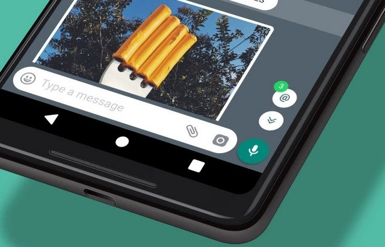
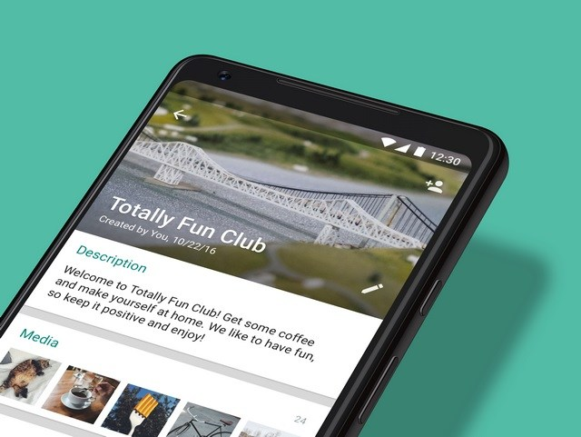
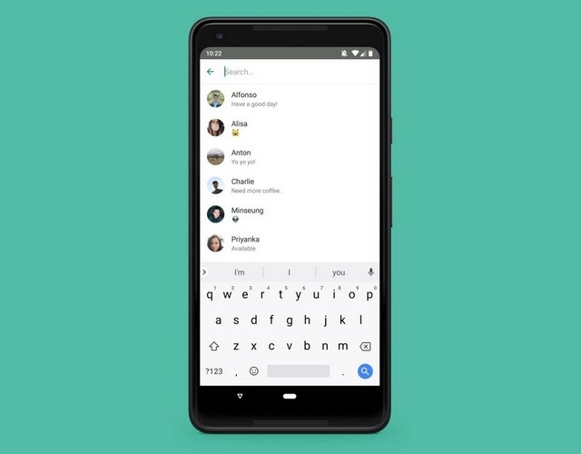
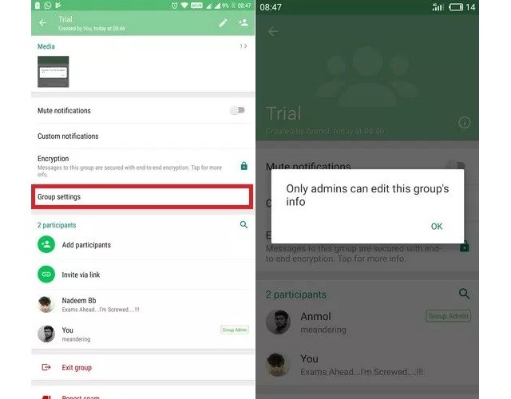
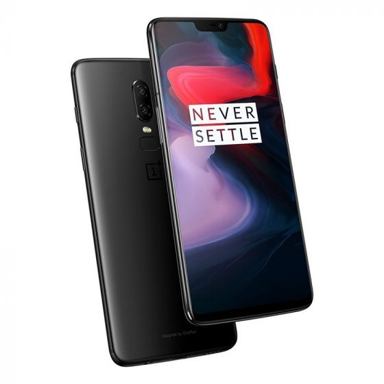

Tesla Model X Tows a Boeing 787 to Set a Guinness World Record
When it comes to generating brute power, electric cars are not the first vehicles that come to mind, as that area falls in the territory of gas guzzling horsepower monsters. Yet, Tesla has managed to quash that notion and accomplished something truly astounding by towing a passenger plane with a Model X electric vehicle.
And by a passenger plane, we don’t mean a small private jet, but the ginormous Boeing 787-9 Dreamliner which weighs 130 tonnes, well above the Model X’s road tow rated capacity of 2.5 tonnes.
In an attempt to set the Guinness world record for the heaviest tow by an electricity-powered passenger vehicle, the Model X was hitched to the huge airliner on a remote taxiway at the Melbourne Airport, and the Tesla EV delivered. The Model X managed to tow the Qantas-owned Boeing 787 airliner to a distance of around 300 metres.
The feat is quite impressive, but this was not just an attempt by Qantas to put the Tesla Model X’s engine to test, as the airline company wanted to show that ‘a small shift to electric power will have an enormous impact in the move to a sustainable future’. Qantas currently employs a large fleet of diesel-powered vehicles such as catering trucks and aircraft loaders, but is now looking to employ electric vehicles which are more eco-friendly and sufficiently powerful too.
“That’s why we’re continuing to collaborate with our friends at Tesla, driving innovation for our customers and increasing sustainability in the transport industry”, Qantas said in an official blog post. As part of its partnership with Tesla, Qantas will provide Model S and Model X owners charging facilities in Sydney, Melbourne, Brisbane and Adelaide, aside from offering the frequent flyers some perks in the month of June.
Follow Us on:
Next Story
Google employees are leaving the company because they don't want it to build AI software for the military
It seems that bad news just keeps pouring in for Google. Earlier today we reported that Google was being investigated in Australia over the claims that it was harvesting data from millions of Android users who were unknowingly paying the telecos for gigabytes of data used during data harvesting. And now word is that Google employees are quitting the company to protest against its involvement in Project Maven.
For those of you who don't know, Project Maven is an initiative by the US Department of Defence which aims to integrate the power of artificial intelligence (AI) in the US military. The project aims to speed up the analysis of military footage captured by the drones by AI to differentiate between humans and objects. We first heard about the project on Monday when Gizmodo reported that "a dozen" of the Google staffers had resigned to protest against the project.
However, Google's involvement in the project has triggered massive protests within the company and now nearly 4,000 Google employees, out of the 85,000 Alphabet employees, have signed an internal petition asking Google Chief Executive Officer Sundar Pichai to end the tech giant's support for Project Maven and halt the "business of war".
In the letter, Google employees while citing the company's history of avoiding involvement in military work and its motto of "Don't Be Evil" urge the company bosses to cancel Project Maven and draft and publicise a clear policy stating that neither the company nor its contractors would build war technology. "We cannot outsource the moral responsibility of our technologies to third parties...This contract puts Google's reputation at risk and stands in direct opposition to our core values. Building this technology to assist the US Government in military surveillance- and potentially lethal outcomes- is not acceptable," the letter states.
Follow Us on:
Next Story
WhatsApp Gets Group Catch-up, Member Search and More Admin Controls.
WhatsApp recently began the rollout of a beta update which brought more admin controls, allowing an admin to restrict a group’s regular members from editing group details and also grant/revoke admin permissions.
Group catchup

If you are a member of a WhatsApp group, the hassle of going through the entire conversation feed to find relevant messages can be a tedious one, especially if you have not checked the group in a long time, and don’t particularly want to read every message.
The Group Catch-up feature brings a huge respite, thanks to a new ‘@’ button which allows users to quickly check all the messages in which their name has been mentioned or if someone has replied to their message in the group. Just tap the ‘@’ button and you are good to go.
Group description

Group Description is nothing but the short blurb about a WhatsApp Group where an admin can explain what the group is all about, set guidelines, etc. Thanks to the new update, every new member of a group will now see the group description at the top of the chat, so that they know what the group is all about and be aware of the rules, if any, set by the admin.
Participant search

This feature allows users to easily search for a group member from the group info page, making it more convenient to find a group participant and start a one-on-one conversation.
Admin Controls

Admin Controls allow admins to set permissions that prevent a group’s regular members from editing the group title, description, and photo. Available under the ‘Edit group info’ section on the ‘Group settings’ page, there are two admin control options – ‘Only admins’ and ‘All participants’, either of which can be selected to specify who can edit group details.
Moreover, a group’s original admin can now revoke the admin permissions from any user, and also, a group’s original creator can no longer be removed from a group. Lastly, WhatsApp has also introduced a new feature which prevents a group’s admin(s) to add a person who has left the group multiple times in the past for some reason.
Follow Us on:
Next Story
Flipkart Plans Amazon Prime Rival; Developing Regional Language Voice Assistant With Microsoft.
Last week, Walmart acquired a majority stake in Flipkart’s e-commerce business in the largest e-commerce acquisition ever. It also resulted in the brusque exit of one of the two founding members – Sachin Bansal, but the company is already making big plans for the next generation of users and the existing ones, as the competition with Amazon intensifies.
Flipkart’s other co-founder Binny Bansal has assured employees that the company will execute changes over the coming months in the way it functions, reports Factor Daily. The most important change will be finding newer ways of incentivizing customers, rather than simply giving them discounts. The focus is now on retaining customers instead of acquiring new ones.
Flipkart answer to Amazon prime
Amazon Prime has not only assures quick deliveries but has raised the standards of service quality as well as the expectation of consumers, as Amazon has thrown in Prime Video and Prime Music, as well. Flipkart will launch a subscription-based Prime rival to reward existing users and create long-term commitments.
The service is currently under development and should be launched well in time for Flipkart’s annual shopping fest – the Big Billion Day sale – which happens around September every year. With this, the e-commerce giant wants to attract more buyers from Tier-II cities and even smaller towns as the urban market is drawing close to a saturation.
A Flipkart-Powered Voice Assistant
Amazon’s Alexa plays songs for you, engages all family members in games, but Amazon also wants you to shop through Alexa to make checkout and payments convenient. Flipkart is now taking a similar route and working with Microsoft, an existing investor, to develop a voice assistant for shoppers.
It’s not yet clear whether this ties into Cortana and Microsoft’s aim to bring its voice assistant to real world locations, rather than keeping it confined to mobile and PC devices.
Follow Us on:
Next Story
There Will Be a OnePlus 6T This Year, Hints Co-Founder Carl Pei.
For the last couple of years, OnePlus has been launching smartphones with great specs and then breaking the hearts of all the buyers by launching better hardware a few months later. Not a lot of people are fans of this upgrade cycle, but it’s most likely to stay, as confirmed by OnePlus co-founder Carl Pei.

The OnePlus 6 launch is just around the corner, but if you’re wondering about the OnePlus 6T – yes, there will be one. There’ll probably be a 7T next year too, Pei hinted in an interview with WIRED. Pei, who is in London for the OnePlus 6 global launch, said the current hardware upgrade cycle suits majority of its customers. “Right now, the vast majority of our customers are still purchasing phones online, and these customers have a very different profile: they’re very tech-savvy, they know what all the latest specs are and all the new brands. They are also less patient.”
Pei said the upgrade cycle is faster online as after a few months people are already looking at the next big smartphone flagship. However, this effect is not so pronounced in offline channels. “So, right now, since our business model involves a lot of online consumers, it’s smarter for us to have two products a year. I think this will change, but it’s not going to be that quick.”
Follow Us on:
Next Story
Exclusive: Download the Official OnePlus 6 Wallpapers
After much anticipation, OnePlus has finally launched the OnePlus 6, the successor to the OnePlus 5T. Featuring a full 6.28-inch 19:9 display along with a notch, offering an 84% screen-to-body ratio, the display is clearly the biggest highlight of the device. But what makes this display so great are the wallpapers that OnePlus has included on the OnePlus 6.
During the launch of the device, you must have seen the wallpapers being showcased by the Chinese giant. The vibrant and colorful wallpapers complement the Full Optic AMOLED display on the OnePlus 6 and make the device look all the more popping. Now, wouldn’t it be great if you could get these wallpapers on your device? Well, guess what, you can! All you have to do is to click on the link below to download them.